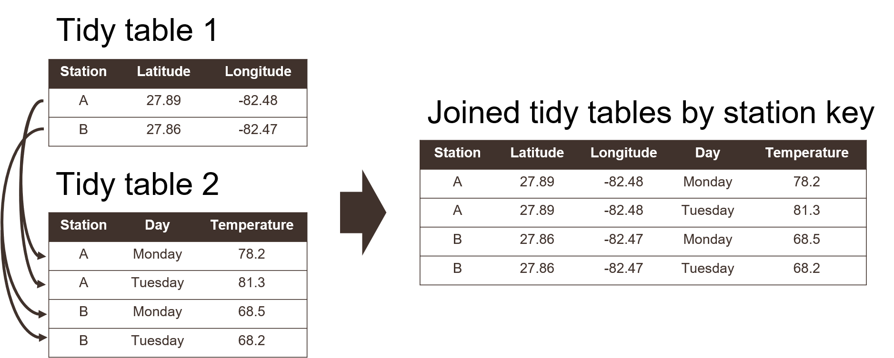

3 Open science for impactful products
3.1 Lesson Outline
3.2 Goals and motivation
This is the third module in our four hour workshop on open science. Now we focus on core principles for data management as the foundation for open science. We discuss the role of data management to support decisions using open science. Then, we introduce the concepts of tidy data as a unified format for storing information. We close with a discussion of metadata concepts and tools to make sure your data have a life beyond the project.
- Goal: understand best practices for data management as a key concept for open science
- Motivation: cultivate data as a living, shared resource
3.3 Data as the foundation for open science
In the last module, we talked about collaboration as the single most important activity of open science. So, why are we now talking about data management? Understanding the tools of collaboration allows you to better engage with your colleagues and partners, but open engagement will mean nothing if your data look like garbage.

Anybody who has ever worked with data knows that it comes in many shapes and sizes, most more like the right side of the above picture. Poor data management occurs for many reasons, but here’s a few of the common reasons:
- What’s easy to enter in the field doesn’t usually translate to easy analysis
- Egregious use of Excel as data management software
- Metadata is a chore that is often an afterthought
It’s often said that 90% of working with data is cleaning (or “wrangling”), whereas the actual analysis and interpretation part is a small fraction of your total effort. Using better data management practices will not only help you save time, it’s also a service for your colleagues and future collaborators. Therefore, better data management leads to more open science.
The FAIR principles outlined in the first module are especially useful when working with data for open science applications. Many of the collaborative tools in the second module can help you work towards putting FAIR data into practice. In this module, we’ll go a step further to discuss how data structure, including metadata, can produce a FAIR dataset.
3.4 Principles of tidy data
At their core, tabular data allow you to store information as observations in rows and variables in columns, yet its very common to try to make a data table more than it should be. Unless you spend a lot of time working with data, it can be difficult to recognize common mistakes that lead to “table abuse”.
Before we get into tidy data, we need to discuss some of the downfalls of Excel as a data management system. There are many examples that demonstrate how Excel has contributed to costly mistakes through the abuse of tables, often to the detriment of science (Ziemann, Eren, and El-Osta 2016).
Excel allows you to abuse your data in many ways, such as adding color to cells, embedding formulas, and automatically formatting cell types. The problem occurs when this organization becomes ambiguous and only has meaning inside the head of the person who created the spreadsheet. Embedding formulas that reference specific locations in or across spreadsheets is also a nightmare scenario for reproducibility.

If you absolutely must use Excel to store data, the only acceptable format is a rectangular, flat file. What do we mean by this?
A rectangular file:
Store data only in rows and columns in matrix format (e.g., 10 rows x 5 columns), with no “dangling” cells that have values outside of the grid or more than one table in a spreadsheet.
A flat file:
No cell formatting, no embedded formulas, no multiple spreadsheets in the same file, and data entered only as alphanumeric characters.
Broman and Woo (2018) provide an excellent guide that expands on these ideas. Essentially, these best practices force you to isolate the analysis from the data - many people use Excel to mix the two, leading to problems.
Now we can talk about tidy data. The “tidy” data principles developed by Hadley Wickham (Wickham 2014) are a set of simple rules for storing tabular data that have motivated the development of the wildly popular tidyverse suite of R packages (Wickham et al. 2019). The rules are simple:
- Each variable must have its own column;
- Each observation must have its own row; and,
- Each value must have its own cell.
Graphically, these rules are shown below:

Using these principles for data storage may seem unnatural at first because of a difference between what’s easy for entering data versus what makes sense for downstream analyses. For example, dates are often spread across multiple columns, such as having one column for each year of data where the header indicates the year that applies to data in each column.
Using a tidy format also allows you to more easily join data between tables. This is a common task when you have information spread between different tables because: 1) it might not make sense to keep the data in the same table, and 2) the analysis depends on information from both tables. Tidy data shared between tables can be linked using a “key” as a common identifier.

Watch and learn
Making an untidy dataset tidy using Excel.
Watch and learn
Making an untidy dataset tidy using R.
library(readxl)
library(dplyr)
library(tidyr)
# import and wrangle
dat <- read_excel('data/untidy.xlsx', skip = 1) %>%
fill(Location) %>%
pivot_longer(cols = `2019`:`2021`, names_to = 'Year', values_to = 'acres/category') %>%
separate(col = `acres/category`, into = c('acres', 'category'), sep = '/')
dat## # A tibble: 27 × 5
## Location Habitat Year acres category
## <chr> <chr> <chr> <chr> <chr>
## 1 Clear Bay Seagrass 2019 519 B
## 2 Clear Bay Seagrass 2020 438 C
## 3 Clear Bay Seagrass 2021 375 A
## 4 Clear Bay Oysters 2019 390 B
## 5 Clear Bay Oysters 2020 875 B
## 6 Clear Bay Oysters 2021 724 A
## 7 Clear Bay Sand 2019 742 C
## 8 Clear Bay Sand 2020 702 A
## 9 Clear Bay Sand 2021 505 C
## 10 Fish Bay Seagrass 2019 930 B
## # … with 17 more rows3.5 Importance of metadata
How many times have you been sent a dataset without any idea what it contains or why it was created? How are you sure the information is valid and that your analysis takes into account the limitations of the data? How many times have you willfully sent someone a dataset without fully providing this information?
Without metadata it’s impossible to know critical details about a dataset that can inform its analysis, and more importantly, its use to inform decision-making. Curating data should be synonymous with metadata generation and is an important part of open science. We cannot provide open data in good faith without also providing metadata.
Metadata is literally defined as “data about data” or “information about information”. It varies from simple text descriptions of a dataset, such as “who”, “what”, “when”, “where”, “why”, and “how”, to more formalized standards with the intent of preparing your data for archival in a long-term repository. A useful definition is provided by Gilliland (2016):
A suite of industry or disciplinary standards as well as additional internal and external documentation and other data necessary for the identification, representation, interoperability, technical management, performance, and use of data contained in an information system.
Why don’t we see more metadata in the wild? Short answer is that it’s often an afterthought, if considered at all. Creating metadata is usually tedious and the return on investment is not apparent at onset of a project. However, the collective growth of sciences and its application to real world problems is dependent on metadata.
The US Geological Survey provides a useful document on creating Metadata in “plain language” to distill the basic information contained in a metadata file. It provides a workflow for answering the “who”, “what”, “when”, “where”, “why”, and “how” questions for metadata. Below is a brief synopsis:
What does the dataset describe?
Information here would include very basic details about the dataset including a title, geographic extent, and period of time covered by the data. For geographic extent, this may often include explicit coordinates covering the study area. Location is useful for indexing your dataset relative to others, if for example, a researcher wanted to find data for all studies in the geographic extent of Tampa Bay.
Who produced the dataset?
This would be yourself and anyone else who has made a significant contribution to the development of a dataset. Data are increasingly being used as citable resources and including individuals that were important in its generation ensures proper attribution. If someone has spent hours toiling in the field to collect the data or hours visually scanning a spreadsheet for quality control, include them!
Why was the dataset created?
Describing why a dataset was created is critically important for understanding context. If others want to use your data, they need to know if it’s appropriate for their needs. Here you would describe the goal or objectives of the research for which the data were collected. It should be clear if there are limitations in your data defined by your goals.
How was the dataset created?
Here you would describe the methods used to generate the data, e.g., field sampling techniques, laboratory methods, etc. This information is important so others can know if you’ve used proper and accepted methods for generating the data. Citing existing SOPs or methods that are recognized standards in your field would be appropriate.
How reliable are the data?
It’s also important to explicitly note instances when the data could be questionable or inappropriate to use. Here you could describe any quality assurance or quality control (QAQC) checks that were used on the data. There are often formalized ways to do so, such as codes or descriptors in tabular data defining QAQC values (e.g., data in range, below detection limits, sensor out of service, etc.).
How can someone get a copy of the dataset?
Good metadata has information on who contact for getting the data. This contact may not be the same as who created the dataset (e.g., IT staff). For archived or publicly available data, this information is more important for who to contact should someone have questions. Information on obtaining a copy of the data should also describe any special software or licensing issues related to accessing the data.
Once you’ve gathered this information, how do you turn it into literal metadata? It depends on how deep you want to go. At it’s simplest, your metadata could be a simple text file with answers to the questions. Or it could be a specific file format used by modern data archive repositories (e.g., EML format).
Here’s an example of a bare bones metadata file. One could easily type this up in a text file or spreadsheet.

3.5.1 Data dictionaries
Often the first step in documenting metadata is to create a data dictionary. Think of this as the specific description of the contents of a tabular data file. Developing a a data dictionary not only helps with metadata, but also helps you think more clearly about your data.
Exercise
Create a data dictionary for the tidy dataset from the previous example.
References
Broman, K. W., and K. H. Woo. 2018. “Data Organization in Spreadsheets.” The American Statistician 72 (1): 2–10. https://doi.org/10.1080/00031305.2017.1375989.
Gilliland, A. J. 2016. “Setting the Stage.” In Introduction to Metadata, 3rd ed. Los Angeles, California: Getty Publications.
Wickham, H. 2014. “Tidy Data.” Journal of Statistical Software 59 (10): 1–23. https://doi.org/10.18637/jss.v059.i10.
Wickham, H., M. Averick, J. Bryan, W. Chang, L. D’Agostino McGowan, R. François, G. Grolemund, et al. 2019. “Welcome to the tidyverse.” Journal of Open Source Software 4 (43): 1686. https://doi.org/10.21105/joss.01686.
Ziemann, M., Y. Eren, and A. El-Osta. 2016. “Gene Name Errors Are Widespread in the Scientific Literature.” Genome Biology 17 (1): 1–3. https://doi.org/10.1186/s13059-016-1044-7.